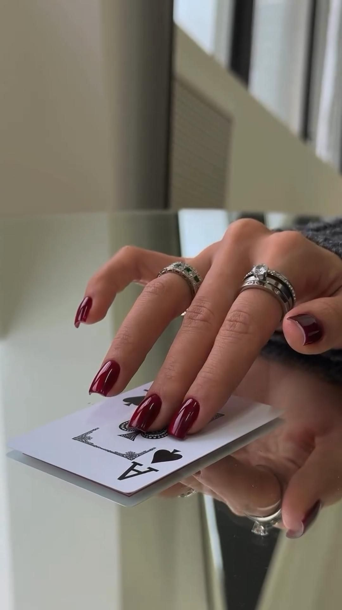
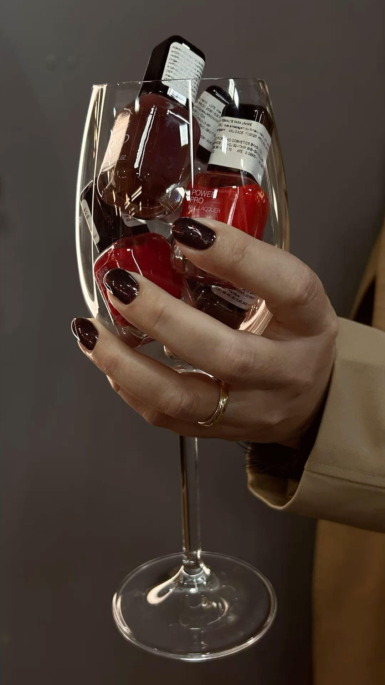
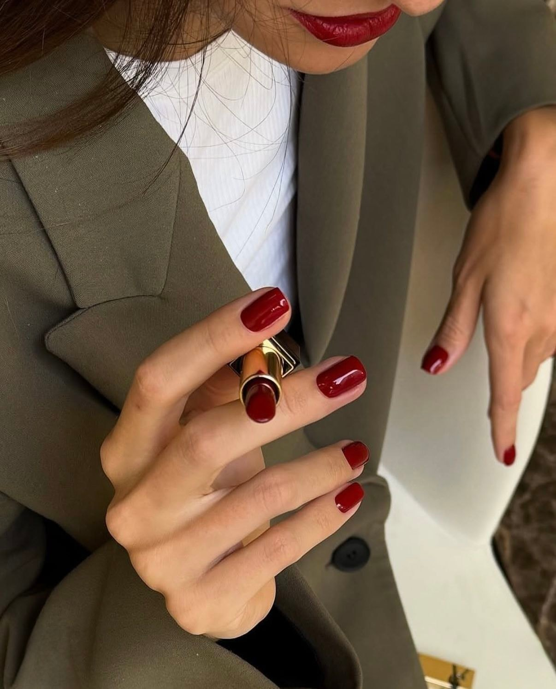
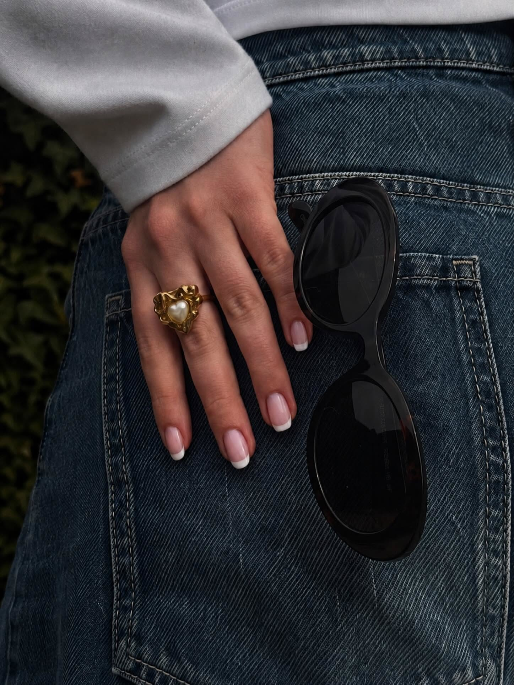
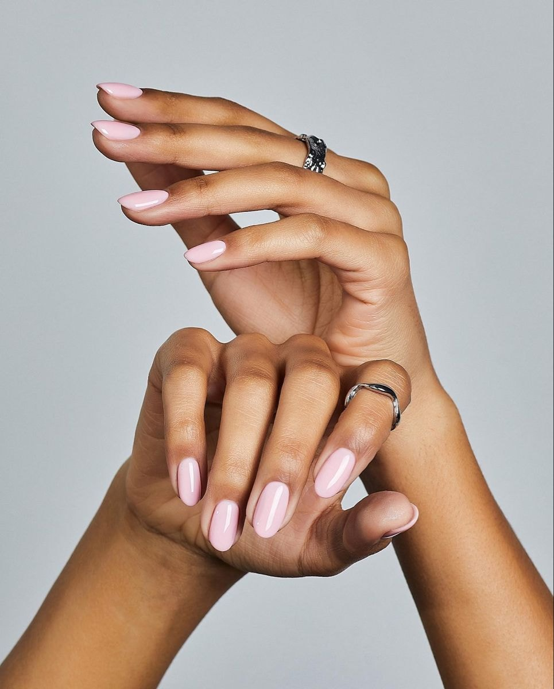
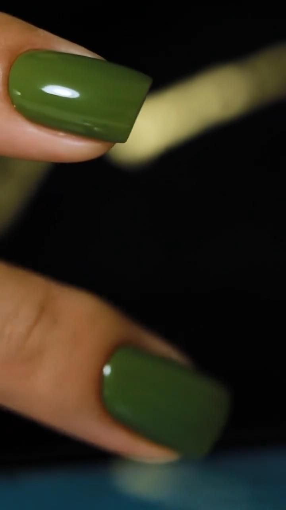

Cinco tonos.
Cero improvisación.
Del cereza negra al verde oliva · Curados por la casa
Tono 01 / 05
Profundo, casi negro. Para la que no necesita levantar la voz.

Tono 02 / 05
El clásico, en versión Alma: cálido, terroso, sin estridencia.

Tono 03 / 05
El nude que parece tu uña, pero en su mejor día.

Tono 04 / 05
Lechoso, luminoso, silencioso. Elegancia que no pide permiso.

Tono 05 / 05
El inesperado. Para cuando el rojo ya te lo sabes de memoria.

Dínoslo al reservar · WhatsApp 311 566 2051
Tonos de referencia. En tu cita te asesoramos con el equivalente exacto de nuestra carta de color.